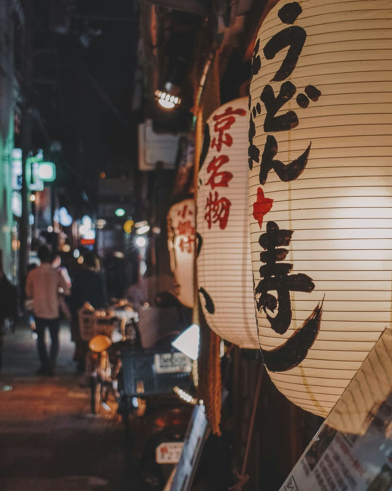

日本の魅力を、
暮らすように味わう。
暮らすように
-

01Stay
空き家を、
泊まれる宿に 眠っていた空き家を、RIVIAが宿に再生。その土地の暮らしに溶け込むように泊まれます。 -

02Walk
宿を拠点に、
まちへ 灯りのともる路地を歩き、地元の店で食べ、買う。旅行者の消費が、宿の外のまちへ広がります。 -

03Connect
土地と
つながり、 また訪れる 食や風土、観光コンテンツ、人。土地の魅力とつながり再訪が生まれ、地域の収益と雇用に。
お知らせ
-
News
合同会社RIVIA&CO.を設立いたしました。
事業紹介
Hospitality
RIVIAが選ばれる理由
-
01
自ら宿を
運営する 「当事者」 下田市の「NODE Shimoda」など、自ら宿を運営。現場で検証したノウハウをお届けします。 -
02
運営・集客・採用を
ワンストップで 運営・集客・人材は、すべてつながっています。窓口をひとつにまとめ、一貫して支援します。 -
03
事業づくりと
データ分析の経験 新規事業開発、行政、データ分析のキャリアを持つ創業メンバーが、数字にもとづいて意思決定を支援します。
運営実績
NODE Shimoda
「和モダンな室内がとてもオシャレで、快適でした！お部屋の居心地がよく、下田旅行の素敵な思い出になりました。」
「駅から近くアクセスが良く利便性が高いと感じました。室内も清潔で過ごしやすかったです。」
「海も近く初日の出も見ることができ、スーパーも近かったのでとても便利で快適な時間を過ごすことができました！」
暮らす旅の手帖
 収益・運営
収益・運営
不動産投資として見る小さな宿・民泊｜賃貸との違いと、利回りを見るときの注意点
 地方創生
地方創生
「関係人口」とは？地域と継続的に関わる人を増やすために、宿ができること
 空き家活用
空き家活用
相続した空き家を売るなら知っておきたい「3,000万円特別控除」｜条件と注意点
 観光市場
観光市場
宿泊税とは？導入する自治体が広がる背景と、宿の運営者が知っておくべきこと
 収益・運営
収益・運営
レビューの評価を上げる宿のゲスト対応｜予約前から滞在後まで、満足を積み重ねるポイント
 開業・制度
開業・制度
小さな宿の開業資金はどう用意する？自己資金・融資・補助金の組み合わせ方
 地方創生
地方創生
観光業の人手不足をどう乗り越える？宿泊業の採用と、地域で人を育てる仕組み
収益・運営
予約が入る宿のページのつくり方｜写真・紹介文・料金設定で選ばれる理由をつくる
 空き家活用
空き家活用
空き家を「貸す」なら知っておきたい契約の種類｜普通借家・定期借家・借り上げの違い
開業・制度
住宅宿泊管理業者とは？委託が必要なケースと、管理会社を選ぶときの5つのポイント
 観光市場
観光市場
訪日客を地方へ｜インバウンドの地方分散が進む背景と、地方の小さな宿のチャンス
 収益・運営
収益・運営
小さな宿の清掃・リネン運用ガイド｜レビューを左右する「清潔さ」を仕組みで保つ方法
 地方創生
地方創生
宿が地域にお金を落とす仕組み｜旅行者の消費が地域経済に広がる「経済循環」とは
 空き家活用
空き家活用
古民家を宿に改修するときのポイント｜残すもの・変えるもの、断熱・水回り・耐震の考え方
収益・運営
予約サイト（OTA）と自社予約、どう使い分ける？小さな宿の集客チャネルの考え方
開業・制度
民泊・小さな宿の消防設備ガイド｜自動火災報知設備・誘導灯・消防法令適合通知書の基本
 観光市場
観光市場
「暮らすように旅する」長期滞在が広がる理由｜ワーケーション・二地域居住と小さな宿の可能性
収益・運営
稼働率・客室単価・RevPARとは？小さな宿の売上を読み解く3つの指標
 空き家活用
空き家活用
空き家バンクとは？仕組みと使い方、登録・購入前に知っておきたい注意点
開業・制度
民泊を始めるには何から？届出から開業までの7ステップと、つまずきやすいポイント
 空き家活用
空き家活用
静岡市・焼津の空き家は宿になる？｜有名観光地でなくても収益物件になり得る理由と見極め方
 空き家活用
空き家活用
実家・祖父母の家を放置するとどうなる？固定資産税を払い続ける人が「小さな宿」を選ぶ理由
観光市場
データで見る日本の観光市場｜インバウンド拡大の裏で地方が抱える5つの課題
地方創生
空き家活用はなぜ地方創生につながるのか？宿泊施設への再生が地域にもたらす4つの循環
開業・制度
空き家で宿を始めるには？民泊新法と旅館業（簡易宿所）の違い・選び方をわかりやすく解説
収益・運営
AirDNAで小規模宿の収益をシミュレーションする方法｜数字の見方と「再現性」を高める5つのコツ
開業・制度
小規模宿の開業・運営で使える補助金・支援制度まとめ｜申請前に知っておきたい注意点
開業・制度
小規模宿は新築と中古どっちがおすすめ？費用・工期・法令・税金の違いから選び方を解説
ご相談の流れ
-
01
お問い合わせ
フォームから24時間受け付けています。2営業日以内に担当者よりご連絡いたします。 -
02
無料ヒアリング
現状と課題、目指したい姿をお伺いします。まだ考えがまとまっていない段階でも構いません。 -
03
ご提案
課題に合わせた支援内容・進め方・お見積りをご提示します。 -
04
ご支援開始
ご納得いただけた場合のみご契約。現場に入り、成果が出るまで伴走します。